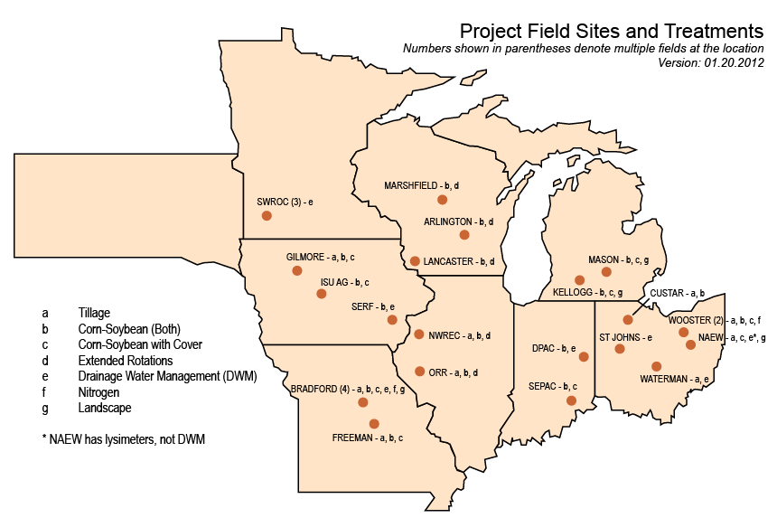

Baseline Monitoring & Experimental Trials (Obj. 1 & 2)
Project Field Sites and Treatments
Click map to view full-size .pdf (opens in new window)
Overview
Obj. 1 & 2 address the overall project's goal of acquiring an expanse of field research data centered around current and novel crop management practices. These practices have the potential to increase resiliency of corn-based cropping systems to a changing climate while also mitigating the carbon, nitrogen and water footprints.
Adpoting standardized protocols for measuring C, N, water and other variables is a crucial first step in establishing sound, reputable science and generating a dataset that is highly functional and usable among many scientists. Protocols carried out identically among CSCAP research sites allows for seamless data entry into the CSCAP central database, provides a consistent set of data for systems analysis and predictive modeling, and gives data users greater confidence when accessing and using the data.
CSCAP researchers established and implemented standardized methodologies for measuring soil organic carbon (SOC), total nitrogen, soil physical properties, water quality and volume, greenhouse gas (nitrous oxide [N2O], carbon dioxide [CO2], and methane [CH4]), crop biomass, C and N in biomass and grain, insect and disease pressure, and grain yield.
An expansive field research network of 26 field sites provide data to the project. Treatments vary from site to site, but every site includes a corn-soybean rotation or continuous corn plot acting as a comparative baseline. Treatments employed across the network include:
- extended crop rotations (wheat)
- cover crops integrated into corn-soybean systems
- tillage management
- drainage water management
- nitrogen management
- landscape
Researchers are measuring greenhouse gas (GHG) emissions in 18 of 26 research sites. Measuring GHG emissions in agricultural systems can be complex due to a range of variables, including cropping systems, soil variables (type and drainage), landscape characteristics and local climate.
The United Soybean Board provided additional funding to support the CSCAP pest management effort. The funding widens the scope of CSCAP's original proposal and offers more data for project analyses.
Resources
GRACEnet - A program generating information concerning greenhouse gas measurements and carbon storage in agricultural systems.
Agricultural Drainage Management Systems (ADMS) Task Force - This task force, comprised of eight states in the upper Midwest, works with farmers, advisors, contractors and industry to implement agricultural drainage management systems.
Midwest Cover Crops Council - A diverse group from academia, production agriculture, non-governmental organizations, commodity interests, private sector, and federal and state agencies collaborating to address soil, water, air and agricultural quality concerns in the Great Lakes and Mississippi river basins.
Obj. 1 & 2 Scientists & Staff
Click here for more information about scientists and staff involved in project field trials.
2011 Annual Conference Posters
Click here to view posters from the 2011 CSCAP Annual Conference detailing work underway for each objective.